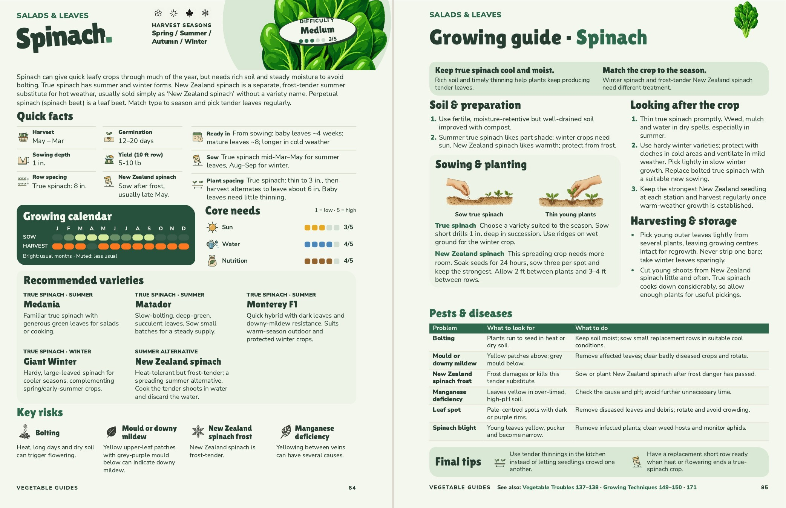

Spinach
Pages 84–85. All four original selections are now explicitly labelled true spinach, with their seasonal guidance retained. A fifth entry features New Zealand spinach as a summer alternative. The introduction now explains that it is usually sold under that name without a variety name. Quick facts are regrouped; routine soil pH/liming advice is removed while the specific manganese-deficiency guidance remains.

Approved by John, 10 November 2026. Both editions have been checked as actual PDFs. Changes and checks.